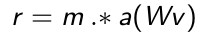
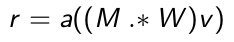
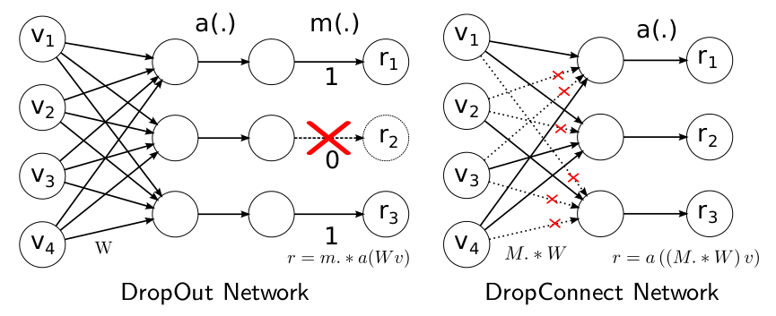
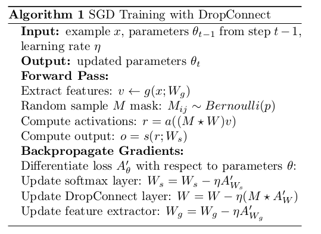
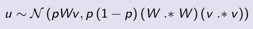
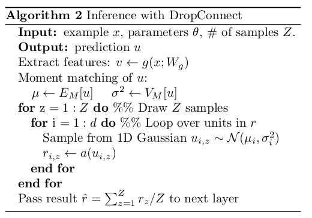

Deep learning：四十六(DropConnect简单理解)
和maxout(maxout简单理解)一样，DropConnect也是在ICML2013上发表的，同样也是为了提高Deep Network的泛化能力的，两者都号称是对Dropout(Dropout简单理解)的改进。
我们知道，Dropout是在训练过程中以一定概率1-p将隐含层节点的输出值清0，而用bp更新权值时，不再更新与该节点相连的权值。用公式描述如下：

其中v是n*1维的列向量，W是d*n维的矩阵，m是个d*1的01列向量，a(x)是一个满足a(0)=0的激发函数形式。这里的m和a(Wv)相乘是对应元素的相乘。
而DropConnect的思想也很简单，与Dropout不同的是，它不是随机将隐含层节点的输出清0,而是将节点中的每个与其相连的输入权值以1-p的概率清0。（一个是输出，一个是输入）
其表达式如下：

两者的区别从下图基本可以看明白：

其原理还是很简单，是吧？
下面主要来看DropConnect的trainning和inference两部分。
training部分和Dropout的training部分很相似，不过在使用DropConnect时，需要对每个example, 每个echo都随机sample一个M矩阵（元素值都是0或1, 俗称mask矩阵）。training部分的算法流程如下：

注意：因为DropConnect只能用于全连接的网络层（和dropout一样），如果网络中用到了卷积，则用patch卷积时的隐层节点是不使用DropConnect的，因此上面的流程里有一个Extract feature步骤，该步骤就是网络前面那些非全连接层的传播过程，比如卷积+pooling.
DropConnect的inference部分和Dropout不同，在Dropout网络中进行inference时，是将所有的权重W都scale一个系数p(作者证明这种近似在某些场合是有问题的，具体见其paper)。而在对DropConnect进行推理时，采用的是对每个输入（每个隐含层节点连接有多个输入）的权重进行高斯分布的采样。该高斯分布的均值与方差当然与前面的概率值p有关，满足的高斯分布为：

inference过程如下：

由上面的过程可知，在进行inference时，需要对每个权重都进行sample，所以DropConnect速度会慢些。
根据作者的观点，Dropout和DropConnect都类似模型平均，Dropout是2^|m|个模型的平均，而DropConnect是2^|M|个模型的平均（m是向量，M是矩阵，取模表示矩阵或向量中对应元素的个数），从这点上来说，DropConnect模型平均能力更强（因为|M|>|m|）。
DropConnect的源代码可以在作者项目主页DropConnect project page.上下载，不过需要用到Cuda（我这里没设备，没有跑它）。
参考资料：
Regularization of Neural Networks using DropConnect, Li Wan,Matthew Zeiler, Sixin Zhang, Yann LeCun, Rob Fergus.
Deep learning：四十一(Dropout简单理解)


【福利】Microsoft Azure给博客园的你专属双重好礼礼
【推荐】融云发布 App 社交化白皮书 IM 提升活跃超 8 倍
【直播】周三，微软全球黑带专家直播部署Web应用
【推荐】BPM免费下载
· 苏宁云商公告：江苏苏宁银行获批筹建
· 神州优车董事长陆正耀：设立一个研究部门 分析滴滴和Uber的模式
· 已停牌5天的乐视网宣布继续停牌
· 如果再给我一次创业的机会，我一定会做这五件事
· 软件公司眉目初现，黑莓做不动手机，转型做“老司机”？
» 更多新闻...
· 高质量的工程代码为什么难写
· 循序渐进地代码重构
· 技术的正宗与野路子
· 陈皓：什么是工程师文化？